1. Project Overview
This repository contains two separate Python programs created for the Functions, Strings and Lists Assessment.
The programs use simple Python logic to collect student information, validate input, perform calculations, and display clear results.
Repository files
| File | Purpose |
|---|---|
result_card_generator.py |
Creates a result card for one student. |
class_marks_analyzer.py |
Analyzes marks for all students in a class. |
README.md |
Explains the project, concepts, instructions, and sample results. |
Entity Relationship Diagram

2. Task 1: Student Result Card Generator
Description
The first program asks for one student's name, roll number, and marks in five subjects. It calculates the total marks, percentage, and letter grade, then displays a formatted result card.
Requirements covered
- Collects the student's name and roll number.
- Collects marks in five subjects: English, Mathematics, Computer Science, Physics, and Chemistry.
- Uses
get_valid_marks(subject)to accept marks only from 0 to 100. - Uses
calculate_percentage(total, max_total)to calculate the percentage. - Uses
get_grade(percentage)to assign the letter grade. - Uses
format_name(name)with.strip()and.title()to clean the student's name. - Checks the roll number with
.isdigit()so it contains digits only. - Uses the required grading scale:
| Percentage | Grade |
|---|---|
| 90 and above | A+ |
| 80 to below 90 | A |
| 70 to below 80 | B |
| 60 to below 70 | C |
| 50 to below 60 | D |
| Below 50 | Fail |
Special passing rule: If even one subject has marks below 40, the final status is Fail, even if the overall percentage is high. The letter grade is calculated from the overall percentage, while the final Pass/Fail status also checks this special rule.
Python concepts used
- Functions:
def, parameters, andreturn - Conditional statements:
if,elif, andelse - String methods:
.strip(),.title(), and.isdigit() - Lists and loops
sum()andany()- Exception handling with
tryandexcept - Formatted output using f-strings
Sample input
Enter student name: ali khan
Enter roll number: 1025
Enter marks in English (0-100): 95
Enter marks in Mathematics (0-100): 88
Enter marks in Computer Science (0-100): 91
Enter marks in Physics (0-100): 84
Enter marks in Chemistry (0-100): 92
Sample output
========================================
STUDENT RESULT CARD
========================================
Student Name : Ali Khan
Roll Number : 1025
----------------------------------------
English : 95
Mathematics : 88
Computer Science : 91
Physics : 84
Chemistry : 92
----------------------------------------
Total Marks : 450 / 500
Percentage : 90.00%
Letter Grade : A+
Final Status : Pass
========================================
Charts


3. Task 2: Class Marks Analyzer
Description
The second program collects the names and marks of all students in a class. It analyzes their performance and displays the class average, highest and lowest marks, passing and failing counts, students above average, and marks in descending order.
Requirements covered
- Asks how many students are in the class.
- Creates two separate lists:
student_names = []student_marks = []- Uses
.append()to store each student's name and marks. - Validates every mark and accepts only values from 0 to 100.
- Asks again when a mark or other numeric input is invalid.
- Calculates the class average.
- Finds the highest and lowest marks.
- Displays all students tied for the highest or lowest marks.
- Counts passing students (50 or above) and failing students (below 50).
- Displays all students whose marks are above the class average.
- Displays marks sorted from highest to lowest.
- Uses custom functions for input validation, average calculation, and above-average student display.
Python concepts and functions used
| Concept / Function | Purpose |
|---|---|
Lists [] |
Store student names and marks separately. |
.append() |
Add each student's information to a list. |
len() |
Count the students in the class. |
sum() |
Add all marks to calculate the average. |
max() |
Find the highest marks. |
min() |
Find the lowest marks. |
sorted() |
Arrange marks from highest to lowest. |
for loop |
Collect and analyze student information. |
if and else |
Count passing and failing students. |
| Custom functions | Keep repeated tasks simple and organized. |
try and except |
Handle invalid numeric input. |
Sample input
How many students are in the class? 4
Student 1
Enter student name: Ali
Enter marks for Ali (0-100): 80
Student 2
Enter student name: Sara
Enter marks for Sara (0-100): 95
Student 3
Enter student name: Ahmed
Enter marks for Ahmed (0-100): 45
Student 4
Enter student name: Ayesha
Enter marks for Ayesha (0-100): 70
Sample output
========================================
CLASS ANALYSIS
========================================
Total Students : 4
Class Average : 72.50
Highest Marks : 95
Student(s) with highest marks:
- Sara
Lowest Marks : 45
Student(s) with lowest marks:
- Ahmed
Passing Students : 3
Failing Students : 1
Students scoring above the class average:
Sara: 95
Marks from highest to lowest:
95, 80, 70, 45
========================================
Chart

4. How to Run the Programs
Requirements
- Python 3 installed on your computer.
- Any Python editor, such as VS Code, PyCharm, or IDLE.
- No external Python libraries are required.
Step 1: Download or clone the repository
git clone https://github.com/YOUR-USERNAME/python-functions-lists-assessment.git
Replace YOUR-USERNAME with your GitHub username.
Step 2: Open the project folder
cd python-functions-lists-assessment
Step 3: Run Task 1
python result_card_generator.py
Step 4: Run Task 2
python class_marks_analyzer.py
Run each file separately because both programs are independent.
5. Input Validation and Testing
Both programs were designed to handle invalid input instead of stopping unexpectedly.
Task 1 test scenarios
| Test | Expected behavior |
|---|---|
| Marks are between 0 and 100 | Accept the marks. |
| Marks are below 0 or above 100 | Show an error and ask again. |
| Letters are entered instead of marks | Show an error and ask again. |
| Roll number contains letters or symbols | Reject it and ask again. |
| Name has extra spaces | Clean it using .strip() and .title(). |
| All marks are 40 or above and percentage is at least 50 | Final status is Pass. |
| Any one subject has marks below 40 | Final status is Fail. |
| Overall percentage is below 50 | Letter grade is Fail. |
Task 2 test scenarios
| Test | Expected behavior |
|---|---|
| Student count is zero or negative | Ask for a positive number again. |
| Student count is not a whole number | Show an error and ask again. |
| Marks are between 0 and 100 | Accept the marks. |
| Marks are below 0 or above 100 | Show an error and ask again. |
| Letters are entered instead of marks | Show an error and ask again. |
| A student scores exactly 50 | Count the student as passing. |
| Two or more students have the same highest or lowest marks | Display all students with those marks. |
| A student scores above the class average | Include that student in the above-average list. |
6. General Programming Practices
- Both tasks are saved in separate Python files.
- Every function has a clear name and a one-line comment describing its purpose.
- Meaningful variable and function names are used.
- Input validation is included.
- Important programming steps have comments.
- Proper indentation and readable formatting are maintained.
- The programs use basic Python concepts and straightforward logic.
7. GitHub Repository Structure
The repository should be named:
python-functions-lists-assessment
It should contain exactly these required project files:
python-functions-lists-assessment/
│
├── result_card_generator.py
├── class_marks_analyzer.py
└── README.md
8. LMS Submission Checklist
Before submitting the assignment, make sure you have:
- [ ] Created the GitHub repository with the required name.
- [ ] Uploaded
result_card_generator.py. - [ ] Uploaded
class_marks_analyzer.py. - [ ] Uploaded
README.md. - [ ] Tested both programs with different input scenarios.
- [ ] Pushed the latest code to GitHub.
- [ ] Checked that the repository is accessible.
- [ ] Copied the GitHub repository URL for LMS submission.
Git commands
Use these commands from inside the project folder:
git init
git add .
git commit -m "Complete Functions and Lists Assessment"
git branch -M main
git remote add origin https://github.com/YOUR-USERNAME/python-functions-lists-assessment.git
git push -u origin main
If the remote repository is already connected, do not add it again. For later updates, use:
git add .
git commit -m "Update assessment files"
git push
9. Final Note
Both programs are independent and use beginner-friendly Python logic. Review the functions, conditions, loops, and calculations before your evaluation so you can explain how each program works and demonstrate it confidently.